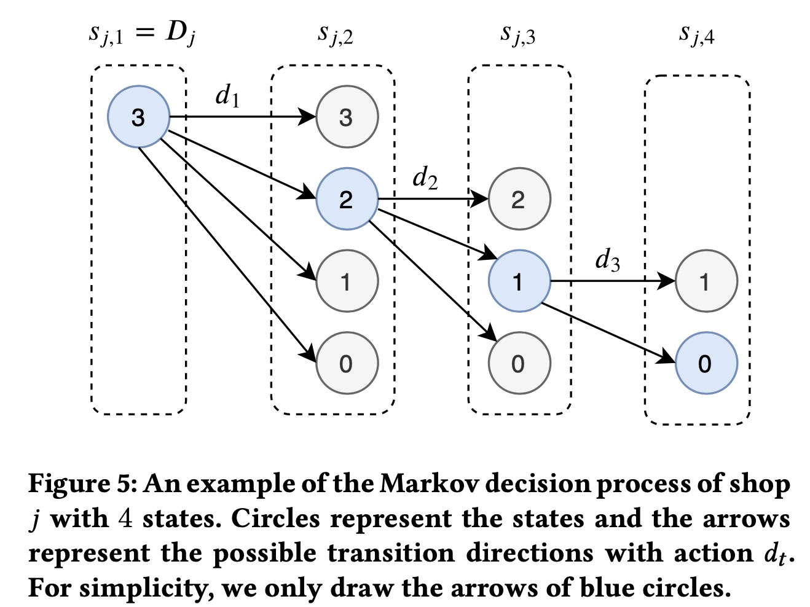

Markdowns in E-Commerce Fresh Retail: A Counterfactual Prediction and Multi-Period Optimization Approach
这篇文章中了KDD2021，是做阿里盒马生鲜的折扣定价问题。
我个人很早之前也关注过电商商品定价的问题，之前看过比如说rue lala、一号店、zara的一些动态定价的方法，心里有些比较模糊的想法，当时想的大概是用choice-model来刻画商品互补替代效应的同时，加入价格的影响，然后在某个周期内求解最优化模型。由于种种原因，当时并没有深入思考算法细节以及针对实际问题进行实践，这类问题主要有三个比较棘手的问题：
- 在只有观测数据的时候，怎么构建价格弹性，现在来看这就是一个反事实推断的问题，不仅是如何做的问题，还有如何评估的问题
- 长周期的规划决策问题怎么建模 & 求解，如何在决策优化中考虑不确定性
- 这种pricing的问题，在现实世界中如何做A/B、如何科学评估效果
这篇文章有很多细节&落地的工作，本文的几个主要贡献：
- 是用了一种半参数结构的模型来学习个体的价格弹性，并给出反事实的需求预测，这种模型能够同时具有非参数机器学习模型的预测能力和经济学模型的可解释性
- 提出了一种多阶段的动态定价算法来最大化有保质期商品整个销售周期内的销售利润，与采用确定性需求的传统做法不一样的是，本文的模型中考虑了反事实销量预测的不确定性，采用了连续的定价策略，并且设计了一种两阶段的算法求解
Introduction
在生鲜零售的场景，商品的新鲜程度是消费者最关心的问题，很多有保质期的商品，比如说蔬菜、肉类、鸡蛋、面包，都是只有有限的销售周期，为了提供新鲜、高质量的商品，控制库存就变得十分重要，如果一个商品在过期之前还没有卖完，那么零售商就会有损失，生鲜零售商往往会采用促销的手段来最大化总利润，但却很难知道最优的价格折扣是什么。
本文中，我们考虑有两种渠道销售商品的生鲜零售商，其中一个是正常价格销售，另一个渠道是折扣商品，其中消费者可以在购满一定销售额的基础上，以一定折扣购买商品。
为了最大化销售利润，零售商需要回答两个问题：
- 商品是否可以在过期前被卖完
- 如果不能被卖完，那么采取促销时，使得利润最优的价格折扣应该是多少
第一个问题是有关于销量预测，第二个问题是关于价格弹性曲线拟合以及价格优化，本文关注于第二个问题，易腐商品多个阶段的动态定价问题。这个问题中需求学习的主要挑战在大部分商品的价格并不会经常变动，甚至从未变动过。
在很多文献中，这个问题被定义为反事实推断，其中商品价格就是处理/干预，最后的销量是被干预的结果，我们关注由于施加处理，对于最后结果改变的差值。零售商可以用价格实验来进行需求的学习，但是随机试验十分浪费，同时有价格歧视的风险，所以我们关注于通过观测数据进行价格需求曲线的学习。由于历史数据的限制，我们很难用单个商品的数据学习到它自己的价格需求曲线，所以利用多个商品一起进行价格弹性的学习是一个相对可行的方案。在学习需求函数时候，可以用机器学习模型来进行预测，通常将价格作为特征之一，销量作为label，然后通过最小化事实误差（观测到结果和预测结果的误差）来拟合模型。然而一个很小的事实误差并不意味着一个很小的反事实误差，价格的重要性很可能被其他特征掩盖。除此之外，大部分的机器学习模型都十分复杂，是一个黑盒，所以很难得到价格和需求的关系，也就是缺乏解释性。为了解决这些问题，我们提出一种数据驱动的半参数模型，结合了机器学习模型和经济学模型，其中机器学习模型用来作为基线需求的预测，经济学模型来解释价格和需求的关系，为了学习每个商品的价格，采用了多任务学习的方式，基于这个框架，模型学习到的价格弹性和反事实预测都更为稳健。
价格优化的目的是利用反事实的预测结果来选择最优的折扣，最大化整体利润。零售商在一个区域有很多的门店，为了避免价格歧视，一个区域内的商品需要采用相同的价格折扣，因此，我们需要把区域内所有门店都考虑在内。除此之外，因为需求和库存都会随着商品的不同生命阶段而改变，所以需要的是一个动态定价策略。
因为反事实的预测无法避免的会有随机的误差，为了增强算法的鲁棒性，所以我们对模型的不确定性进行进行建模，我们将商品的生命周期化为多个阶段，然后最优化整体的利润，用MDP来建模这个多阶段价格联合优化的问题，同时提出了一个两阶段求解的高效算法。
在离线实验和在线AB中，都有显著的提升。
Problem Formulation
- 零售价格折扣\(d\in[0,1]\)为我们的决策变量
- 产品\(i\)在折扣\(d_i\)上的平均销量\(Y_i^\text{obs}\)
- 特征\(x_i\in\mathbb{R}^n\)
- 类别特征\(L_i\in{0,1}^m\)，假设有3级类别
Counterfactual Prediction
反事实预测问题的目标是在干预\(d_i\)和条件\(X=x_i\)下预估需求/销量的期望\(\mathbb{E}[Y_i|do(d_i),x_i]\)，此处我们假设满足unconfoundness假设。
因为历史上一个商品很少有多种折扣的数据，所以我们无法拟合单个商品的价格需求函数，为了解决这个问题，我们使用数据聚合的方式，我们把所有商品用类目信息进行聚合，然后联合学习多个商品的价格弹性。
我们假设模型结构为 \[ \mathbb{E}\big[\ln(Y_i/Y_i^\text{nor})\big] =g(d_i;L_i,\theta) + h(d_i^\text{o},x_i) - g(d_i^\text{o};L_i,\theta) \] 其中：
- \(Y_i^\text{o}\)是常规渠道产品\(i\)近期的平均销量
- \(d_i^\text{o}\)是商品\(i\)近期的平均折扣
- \(Y_i/Y_i^\text{nor}\)代表了折扣价格使得销量增加的百分比，因为不同商品销量差异很大，所以比率会比绝对值更有用
- 函数\(g(d_i;L_i,\theta)\)是参数化的价格弹性模型，参数\(\theta\in\mathbb{R}^{m+1}\)
- 函数\(h(d_i^\text{o},x_i)\)为非参数预测模型，用于预测基础折扣\(d_i^\text{o}\)的销量，如果\(d_i=d_i^\text{o}\)，那么\(\mathbb{E}\big[\ln(Y_i/Y_i^\text{nor})\big|d_i^\text{o}]=h(d_i^\text{o},x_i)\)
对于价格弹性，我们提出一种双log结构的nested模型 \[ g(d_i;L_i,\theta)=\mathbb{E}\big[\ln(Y_i/Y_i^\text{nor})\big]=(\theta_1+\theta_2^\mathsf{T}L_i)\ln d_i +c \] 其中\(\theta_2\in\mathbb{R}^m\)，\(\theta=[\theta_1, \theta_2^\mathsf{T}]^\mathsf{T}\)，\(c\)为截距参数，\(L_i\)为由三级one-hot变量组成 \[ L_i=[ \underbrace{0,\cdots,1,0}_\text{category 1}, \underbrace{0,1,\cdots,0}_\text{category 2}, \underbrace{0,\cdots,0,1}_\text{category 3}, ]^\mathsf{T} \] 通过指数转换，模型可以写作 \[ Y_i=Y_i^\text{nor} e^c d_i^{\theta_1 +\theta_2^\mathsf{T}L_i},\forall i \] 其中\(\theta_1 +\theta_2^\mathsf{T}L_i\)就是价格弹性，所以每个独立SKU的价格弹性是由类别的价格弹性组成的。为了顾及价格弹性，我们用所有样本最小化均方误差来拟合模型，在现实电商场景中，一个更好的方式是在线实时更新参数： \[ \underset{\theta,c}{\min} \sum_{i=1}^N\sum_{j=1}^t\tau^{t-j} \|\ln\frac{Y_{i,j}}{Y_{i,j}^\text{nor}} - \theta^\mathsf{T}\hat{L}_i \ln d_{i,j} - c\|^2_2 +\lambda\|\theta\|^2_2 \] 其中\(\lambda>0\)是正则系数，\(0<\tau\leq1\)为忘记因子，为了避免较遥远历史数据的影响。
最终的预测模型为 \[ \ln Y_{i,t}(d_i)=\hat{\theta}_t^\mathsf{T}L_i (\ln d_i -\ln d_{i,t}^\mathsf{o}) + \ln Y_{i,t}^\mathsf{o} \] 此处只是建模了商品的价格弹性，忽略了商品之间的互补替代效应。
Multi-Period Price Optimization
此处假设商品之间彼此独立，所以我们针对一个商品进行价格的优化。
区域内存在\(|\mathcal{J}|\)个零售店，每家店\(j\in\mathcal{J}\)，有\(B_j\)个商品在库，期望在\(T_j\)天卖完，如果无法卖完，则会扔掉来保证货品的新鲜度，造成浪费。我们将每一天视作一个阶段，总阶段数为\(T_\max=\underset{j}{\arg\max} T_j\)，在不同周期，商品都会有不同的需求。为了考虑所有店铺的目标，我们期望联合动态优化最优价格。
$$
其中\(w_j\)是浪费损失的权重，\([\cdot]^+\)为非负运算符，\(lb_{jt}\)和\(ub_{jt}\)是折扣最大和最小的上下限制，因为\(Z_{jt}\)和\(B_j\)是独立于决策变量的，所以可以简化上述问题为： $$ \[\begin{aligned} \underset{d_1,\cdots,d_T}{\max} & \sum_{j\in\mathcal{J}} \sum_{t=1}^{T_j} \bigg( p_0d_t+w_j \bigg) Y_{jt}(d_t) \\ \text{s.t.} & \sum_{t=1}^{T_j}\big( Y_{jt}(d_t)+Z_{jt} \big) \leq B_j \quad \forall j\in \mathcal{J} \\ &lb_{jt} \leq p_t \leq ub_{jt} \quad \forall t=1,\dots,T_j,j\in \mathcal{J} \end{aligned}\]$$ 对于上面这个问题，我们并不准备直接求解，考虑到可以打的折扣是是有限的，我们将这个问题转化成离散优化问题。虽然模型已经给出了\(Y_{jt}(d_t)\)和\(Z_{jt}\)的预估，但是仍会有随机的误差，所以我们需要考虑上述问题的不确定性，我们用MDP来建模整个决策过程。
定义每个门店\(j\)在常规渠道和折扣渠道的真实销量为\(a^y_{jt}\)和\(a^z_{jt}\)，用\(s_{jt}\)表示商品\(t\)时刻在门店\(j\)的库存： \[ \begin{aligned} s_{j,1} &= B_j \\ s_{j,t+1} &= s_{j,t} - a_{j,t}^y - a_{jt}^z, \quad t< T_j \\ s_{j,t+1} &= 0 \quad T_j \leq t \leq T_\max \end{aligned} \] 其中\(s_{jt}\)是个单调递减的序列，候选折扣集合\(\cal{D}=\{d^1,\cdots,d^M\}\)。
为了建模销量的不确定性，我们从历史数据中发现，大部分情况下销量服从泊松分布，期望参数为\(Y_{jt}(d_t)\)和\(Z_{jt}\)（此处假设\(Y_{jt}(d_t)\)和\(Z_{jt}\)是\(a^y_{jt}\)和\(a^z_{jt}\)的无偏估计）
定义\(a_{jt}=a^y_{jt}+a^z_{jt}\)，销量不会高于库存，所以我们定义状态转移矩阵 \[ \begin{aligned} P(s_{j,t+1}|s_{j,t},d_t)= \begin{cases} \text{Poi}\big(s_{j,t}-s_{j,t+1}|Y_{jt}(d,t)+Z_{jt}\big) & 0<s_{j,t+1} \leq s_{j,t} \\ 1-Q(s_{j,t}-1,Y_{jt}(dt)+Z_{jt}) & s_{j,t+1}=0 \end{cases} \end{aligned} \] 期望状态转移后的奖励为 \[ R(s_{j,t},d_t,s_{j,t+1})=(p_0d_t,+w_j)[s_{j,t}-s_{j,t+1}-Z_{jt}]^+ \] 所以多阶段的优化问题变成一个选择策略\(\pi(\cdot)\)来最大化累计奖励的问题 \[ \sum_{j\in\cal{J}}\sum_{t=1}^{T_j}R(s_{j,t},d_t,s_{j,t+1}), d_t=\pi(s_t) \] 
为了求解这个MDP的问题，我们提出了一种两阶段的算法，分开反向求解和联合优化两步：
- 对于每个门店，单独进行更新
\[ Q(s_{j,t},d_t)=\sum_{s_{j,t+1}=0}^{s_{j,t}} P(s_{j,t+1}|S_{j,t},d_t)\cdot\big( R(s_{j,t},d_t,s_{j,t+1})+\max_{d_{t+1}\in\cal{D}}Q(s_{j,t+1},d_t) \big), t=2,\cdots T_j, j\in\cal{J} \]
- 联合优化，对于所有店铺联合优化，并在单个阶段求最优
\[ d_1^*=\underset{d_t\in\cal{D}}{\arg\max}\sum_{j\in\cal{J}} Q(s_{j,1}=B_j,_t) \]
所以我们可以得到最优定价\(p_1^*=p_0d_1^*\)，因为这个算法每天会重新更新训练，所以只需要每天重新计算第一阶段的最优值。
Experiment
文中对比了不同模型：Xgb、DeepIV和提出的结构化的回归模型
以及线上实现的结果
一些想法
论文内容部分讲完了，总体是一篇很踏实的文章，一个业务有接近20%的GMV提升，可以说是非常“有效”的解决了问题，但这篇文章仍然有些缺点，或者说没有放在论文里的点，再回顾一下最开始的三个问题：
- 没有直面反事实学习和评估的问题，只是通过加入对于价格弹性的人工知识先验（选择模型+类目分层的关系）来规避这个问题，文中提到的price-sales curve，虽然看着结果很好，但实际上也不能算是非常靠谱的评估。
- 在做多阶段的优化时候，仍然是忽略了不同阶段预测模型效果的差异，T+1和T+N时候的预测，方差是逐渐变大的，如何建模这部分的不确定性，并没有细说。
- 没有具体写AB实验怎么做的，是时间片还是分门店，还是线上用户分流，这些都没有详细写清楚，有很多容易受到challenge的点，这种业务如何科学合理的做实验仍是一个复杂且充满挑战的问题。